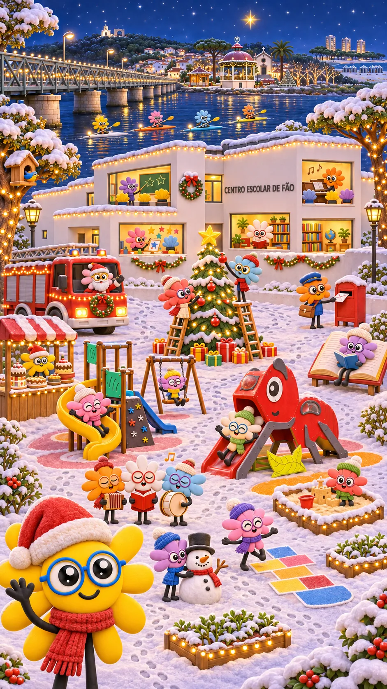

Natal em Fão
O Advento da Lumi
Um desenho para pintar, todos os dias.

O mural de Natal
Os desenhos das crianças de Fão. Toca no ♡ dos teus preferidos.
Um desenho para pintar, todos os dias.

Os desenhos das crianças de Fão. Toca no ♡ dos teus preferidos.

·
Toca e mantém o dedo na imagem para guardar.